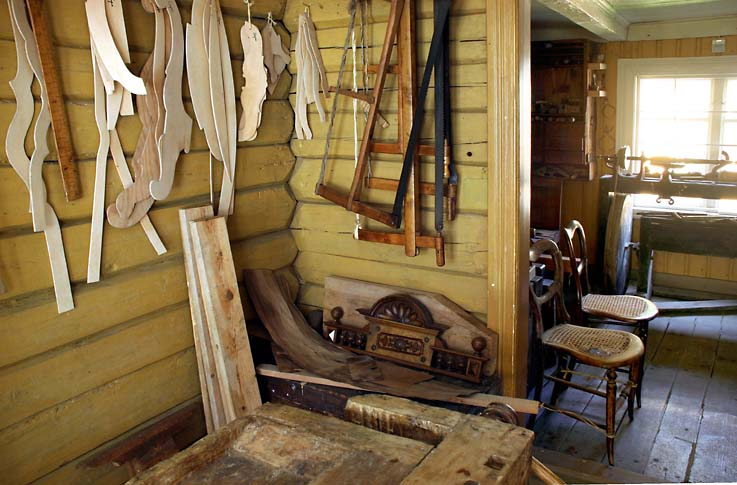
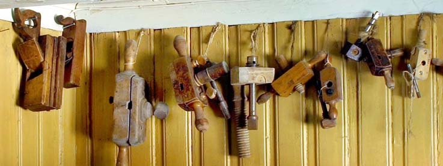

Vest-Agder Fylkesmuseum - Verkstedene i Bygaden
Foto: Torvald Slettebø, Universitetet i Agder, Seniorsenteret (2005)
Henrik Wergelandsgate 29 innleder museets bygade mot vest. Bygningen har et typisk sveitserpreg, med profilerte bjelkeutstikk ved takfot og gavl. Den liggende høvlede panelen med not og fjær var karakteristisk for stilen. Bygningen har i dag fått den utrormingen den hadde i 1902. Flyttet til museet i 1991-94.
Bygningen rommer i dag et telemuseum, et urmakerverksted, og vi ser her litt av salgsutstillingen. De eldste ur hadde ikke fjærdrift, men lodd, som kunne gi etter forutsetningene ganske nøyaktig gange.
Veggurene skulle også pynte veggen, i tillegg til å vise tiden. Klokken til høyre er i drage-stil.
Urmakerens verktøy. Her trengtes godt syn og stødig hånd.
Urverk med fjær, og svinghjul til erstatning for pendel. Messing var et forholdsvis mykt metall, der deler ble slitt og kanskje måte erstattes. Nye deler kunne fremstilles av urnamakeren selv, med
- med enkle men nøyaktige hånddrevne maskiner.
Dreiebenk.

Et tidlig manuelt betjent lite sentralbord. Sentralborddamen fikk innkommende samtale, og forbandt den med mottakerrens kontakthull.
En større manuelt betjent telefonsentral til venstre, Til høyre en tidlig automatsentral, der abonenten slo et nummer på tallskiver.
Her har mekaniske kontaktarmer erstattet telefondamens hender.
Telefonapparat fra 1932. Tallet 1 bruker kortere tid på tilbakeløpet enn tallet 7. På sentralen går tilbakeløpet i samme hastighet, og koblingsarmen finner derfor tallet 7.
Telegrafnøkkelen laget korte eller lange morsesignaler, som ble sendt overtelegraflinjene - og senere også trådløst -
- til mottakeren som nedtagnet signalene på en mekanisk framsveivet papirstrimmel. Og så måtte telegrafisten tolke: Han måtte være fortrolig med morsealfabetet, og omsette det til forståelige bokstaver. Trådløs telegrafi som lydsignaler holdt lenge, fordi svake sendere letter kunne nå fram med morse enn med tale.
Etter hvert ble store deler av verden koblet sammen med telegrafkabler, over land, og på havbunnen. Det er vanskelig for oss å forstå at før telegrafens tid kunne en nyhet bruke dager og uker på å nå fra.
Et kabelleggingsfartøy. Det første tyskerne gjorde da de i 1040 kom til Egersund, var å kutte Nordsjø-kabelen.
I lasterommet lå kabelen i en gigantisk kveil.
Festningsgaden 48 er et typisk kristiansandshus fra 1800. Det ble flyttet til museets bygade i 1960, og inneholder nå verksteder for snekker, skomaker, bøkker og våpensmed.
Møbelsnekkerens velbrukte høvelbenk. Modellen var så vellykket at den har holdt seg helt til våre dager.

Slipestein til verktøyoppsetting. Å dra slipesteinen var nok mest arbeid for svenn eller hjelpegutt.
På veggen maler for møbeldeler. Grindsagene på veggen hadde vridd snor til stramming av bladet. De breie bladene var for rett saging, Det smale bladet vi skimter i bakerste sag, var for rundsaging.
Høvler og annet snekkerverktøy.
Det var mykt stål i sagene, så de måtte filer og vikkes ofte.
Langhøvel, og navere til høyre.
Rotting-flettede stolseter til reparasjon. Det var et vanskelig arbeid.
Nærmest tynn finer i verdifullt treslag, limt utenpå simplere treslag, kanskje som innfelling, intasia.
Lengst til venstre en ferdig reparert rotting-stol. Til høyre dreiebenk for manuell drift, med fotplate nederst.
Det er nok et bordbein som er dreid her. Det ble ofte gjort på frihånd, etter øyemål, så beina ble ikke nøyaktig like, som når en dreier med mal.
Bøkkerens verksted. Hvert enkelt tønnebord ble høvlet i form, presset inn, og holdt på plass av tønnebånd, som i senere tid var av jern. Også bånd av tre ble brukt. I bakgrunnen henger merkejern med brenn-stempler.
Lokket slås ned med klubbe.
Litt av bøkkerens verktøy.
Tønnebånd av tre, låses med doble innskjæringer.
Stativet med fliser ble plassert inni fuktig tønne, og tent på. Da beholdt tønnebåndene krumningen.
Tønna til høyre viser begge typer tønnebånd, med jernbånd øverst og nederst, der påkjenningen er størst.

Skomakerverkstedet, med støvel som sårt trenger til reparasjon. For hundre år siden, den gang Kristiansand ennå var en liten by, var det 34 skomakere her. Støvelen på lesten får nå sydd sålen fast. Betegnelsen beksømstøvler skriver seg fra tråd innsatt med tjære eller bek for holdbarhet.
Skomakeren fikk læret fra garveriet, med behandlet det selv videre.
Han ikke bare reparerte, men sydde nytt skotøy, over slike lester.
Overlær til en støvel. Uttrykket "Nå går det på overlæret" forteller om grov overdrivelse: Hele sålen er slitt bort! Her er maljene slått i, og for- og bakstykket av skinnet er sydd sammen.
Helen måtte plugges fast.
Skomakerens symaskin var hans viktigste redskap. Kan kunne svinge trykkfoten, og sy i ulike retninger. Og han var selv drivkraft, med fotpedalen.
Bruk og kast mentaliteten hadde ennå ikke oppstått.
Skomakeren måtte venne seg til dårlig lys, bare hjulpet av en svak parafinlampe.
I eldre tid hadde håndverkerne skilt som illustrerte virksomheten. Detter er skiltet til en våpensmed.
Ambolt og smieutstyr fra våpensmia.
Arbeidsbordene i våpenverkstedene.
Verktøy-veggen.
Visstnok utstyr til dreiebenken.
Metalldreiebenken ser nokså ny og fin ut, men remdriften viser alderen. Så farlig utstyr ville ikke tillates i dag.
Uthuset innerst i museets bakgård er en stor laftet bygning i to etasjer. Det er panelt og malt i tradisjonell rød farge. I første etasje står det vogn, slede og annet kjøretøy. En trapp i husets venstre gavlside føre opp til en svalgang som går gjennom hele annen etasje. Denne svalgangen er bygd ut over første etasje og danner et lite takutspring. To rom ligger ved svalgangen. Det ene er innredet som lanterneverksted, det andre som et tradisjonelt blikkenslagerverksted.
Blikkenslagerverkstedet i det innerste rommet er nærmest komplett med verktøy, utstyr og maskiner etter blikkenslager Bendix Jahnsen i Kristiansand (1660-1952) Her kan man se maler, forskjellige hamre, ulike sakser, vinkelhaker, loddebolter og annet karakteristisk blikkenslagerverktøy. Flere maskiner er også plassert i verkstedet. Mye av det opprinnelige miljøet er forsøkt gjenskapt. Utstyret sto opprinnelig mot naboeiendommen Kristian IV. gaten 27. I første etasje var det da fjøs, en stall, et lagerrom og en utedo, mens andre etasje inneholdt lagerrom og svalgang med et høyloft over.
Lanterneverkstedet kommer fra Kr. Pedersens blikkenslagerverksted, som opprinnelig holdt til i Dronningensgate. Produksjonen av skipslanterner var en spesialitet innen blikkenslagerfaget.
Musikk til arbeidet: Kurer-radioen plasserer oss like etter første verdenskrig. Det var en av de første modellene med transistorer, store og klumpete.
Rikholdig utstyr av manuelt blikkensklagerverktøy.
Maler, beregnet for de ulike produsjonsmodellene.
Tilformingsmaskiner av litt eldre modell, men ennå fullt brukbare.
Alt er hånddrevet, også slipesteinen for oppsetting av verktøy.
Falsemaskin. Og gassbeholder, som relativt nykomling.
Det var flere tobakksfabrikker - eller snarere verksteder - i Kristiansand, og utstyret her er kommet har ulik opprinnelse.
Råstoffet, tobakksblader.
Visstnok et trinn i produksjonsprosessen på vei mot skråtobakk?
Former hvor man laget sigarer, og -
- presse for disse formene.
Presser.
Et ledd i skråtobakksproduksjonen.
Ferdig saftig skråtobakk, tilsatt smaksingredienser.
Det var lenge før man visste om lungekreft og infarkt: Den sjenerer ikke halsen!
Men urenslig har den alltid vært. Det var ikke alltid lett å treffe blink i spyttebakken.
Krambua.